Phim Kinh Dị
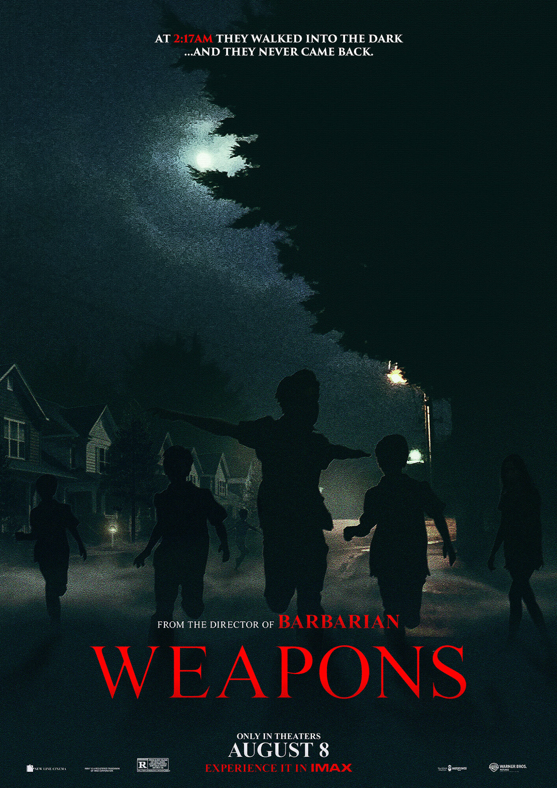
GIỜ MẤT TÍCH
Khi tất cả học sinh trong cùng một lớp học bất ngờ biến mất vào cùng một đêm, cùng một thời điểm, ngoại trừ một em nhỏ, cả cộng đồng bắt đầu đặt ra câu hỏi: ai hoặc điều gì đứng sau sự biến mất bí ẩn này?
Chi tiết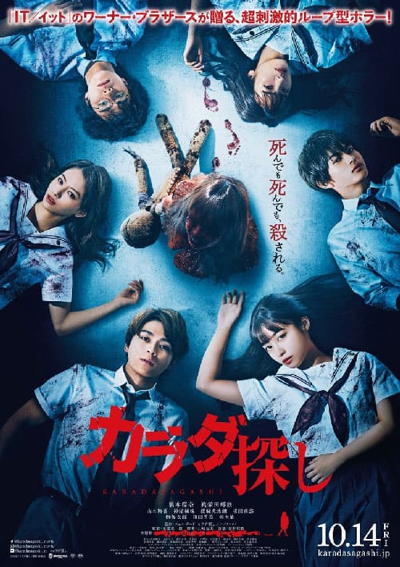
TRÒ CHƠI TÌM XÁC
Mắc kẹt trong vòng lặp thời gian đầy chết chóc, 6 học sinh cấp ba phải tìm ra các phần thi thể nằm rải rác của một nạn nhân vô danh để phá vỡ lời nguyền và nhìn thấy ngày mai.
Chi tiết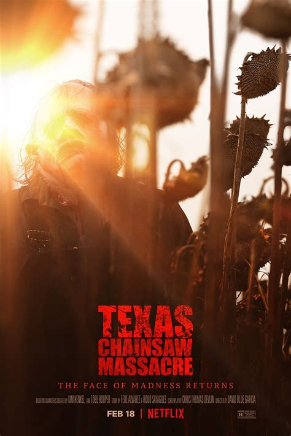
TỬ THẦN VÙNG TEXAS
Những người có ảnh hưởng đang muốn thổi làn gió mới cho một thị trấn đìu hiu ở Texas thì chạm trán tên sát nhân khét tiếng đeo mặt nạ da người.
Chi tiết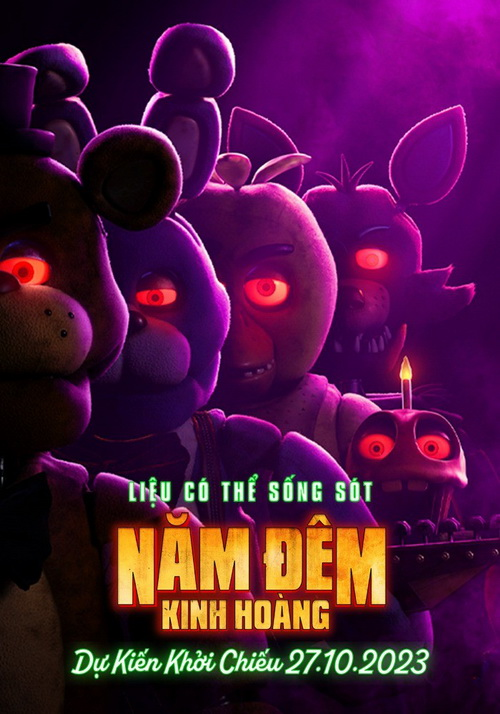
NĂM ĐÊM KINH HOÀNG
Nhân viên bảo vệ Mike bắt đầu làm việc tại Freddy Fazbear's Pizza. Trong đêm làm việc đầu tiên, anh nhận ra mình sẽ không dễ gì vượt qua được ca đêm ở đây. Chẳng mấy chốc, anh sẽ vén màn sự thật đã xảy ra tại Freddy's.
Chi tiếtPhim truyền hình
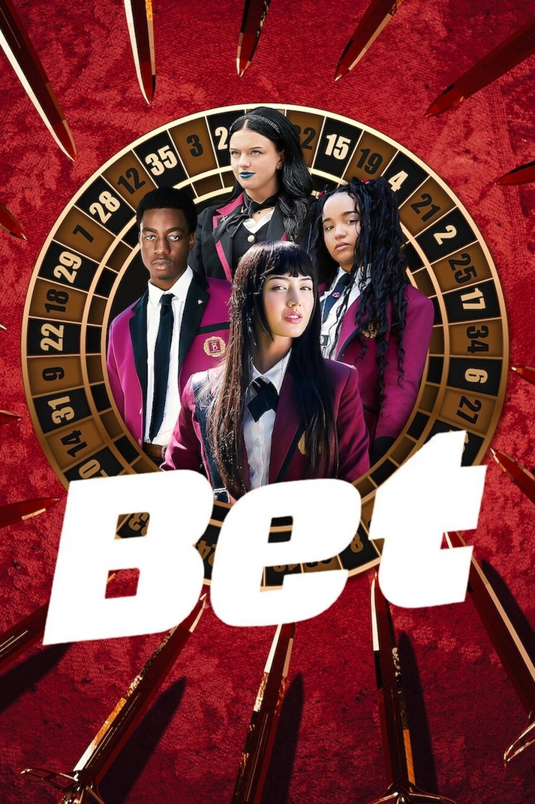
HỌC VIỆN ĐỎ ĐEN
Tại một trường tư thục nơi cờ bạc quyết định địa vị xã hội, một học sinh mới tài năng có quá khứ bí ẩn đang khuấy động mọi chuyện và quyết tâm trả thù.
Chi tiết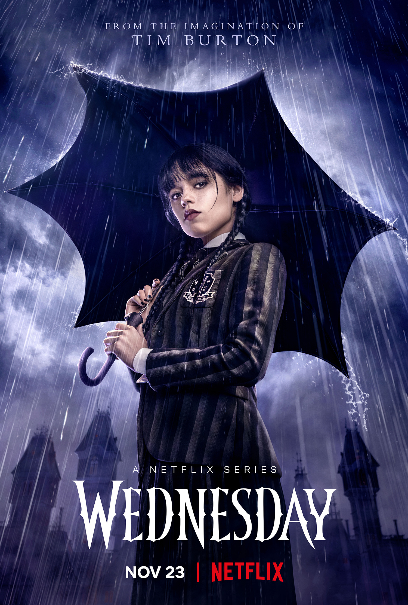
WEDNESDAY
Thông minh, hay châm chọc và "chết trong lòng" một chút, Wednesday Addams điều tra những bí ẩn khó lường trong khi có thêm bạn và cả kẻ thù mới ở Học viện Nevermore.
Chi tiết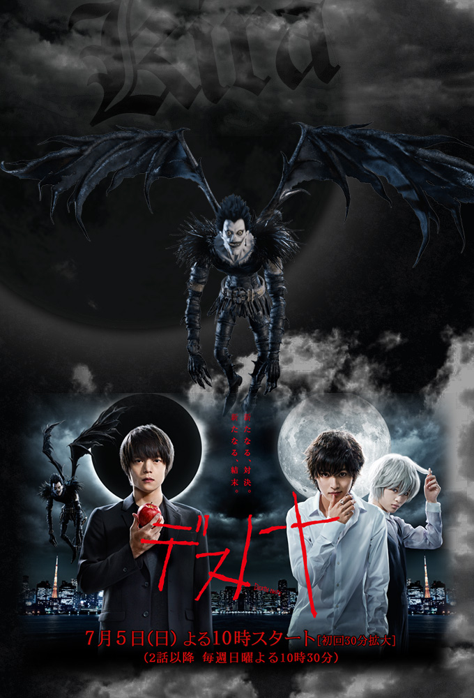
CUỐN SỔ TỬ THẦN
Khi một học sinh trung học Nhật Bản sở hữu một cuốn sổ tay thần bí, cậu nhận thấy mình có khả năng giết bất cứ kỳ ai bằng cách viết tên người đó vào cuốn sổ.
Chi tiết
TRÒ CHƠI CON MỰC
Hàng trăm người chơi kẹt tiền chấp nhận một lời mời kỳ lạ: thi đấu trong các trò chơi trẻ con. Đón chờ họ là một giải thưởng hấp dẫn – và những rủi ro chết người.
Chi tiếtHoạt Hình Nhật Bản | Anime
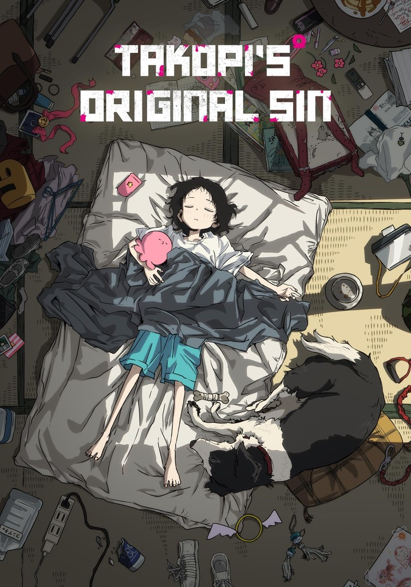
NGUYÊN TỘI CỦA TAKOPI
Một sinh vật nhỏ hình mực từ hành tinh xa xôi đáp xuống Trái Đất với ước mơ lan tỏa hạnh phúc. Tại đây, cậu gặp Shizuka – cô bé luôn lặng lẽ, không bao giờ cười. Dù chẳng hiểu hết nỗi buồn của con người, Takopi vẫn cố gắng dùng tất cả “xúc tu” của mình để khiến cô bé mỉm cười. Nhưng con đường đến hạnh phúc... chưa bao giờ đơn giản.
Chi tiết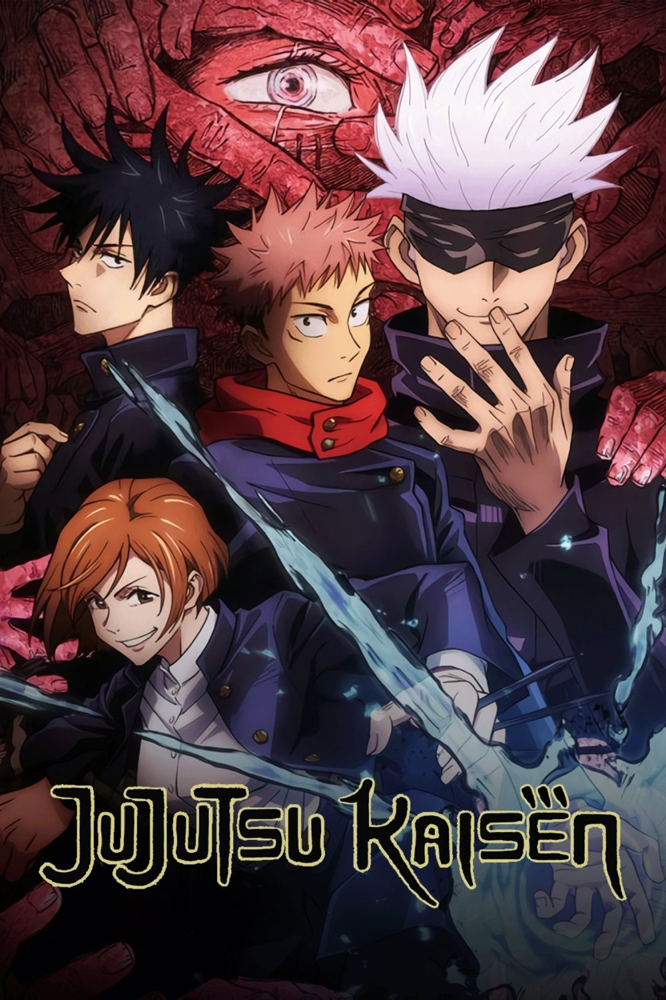
CHÚ THUẬT HỒI CHIẾN
Không còn sống được bao lâu, nam sinh cấp ba Yuji quyết tìm cho ra và nuốt 19 ngón tay còn lại của lời nguyền chết chóc để cậu và nó cùng tan biến.
Chi tiết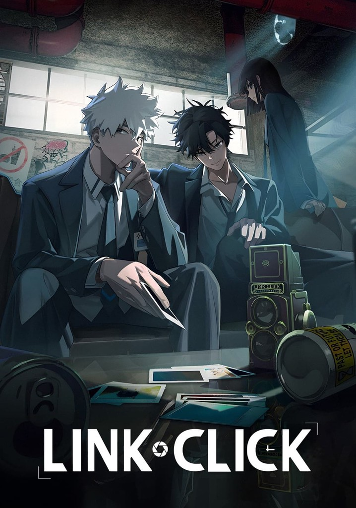
NGƯỜI ĐẠI DIỆN THỜI GIAN
Trình Tiểu Thời và Lục Quang – hai chàng trai sở hữu năng lực đặc biệt, có thể bước vào ký ức quá khứ thông qua những bức ảnh. Họ dùng khả năng này để giúp khách hàng tìm lại sự thật, nhưng dần bị cuốn vào những bí mật nguy hiểm vượt ngoài tầm kiểm soát.
Chi tiết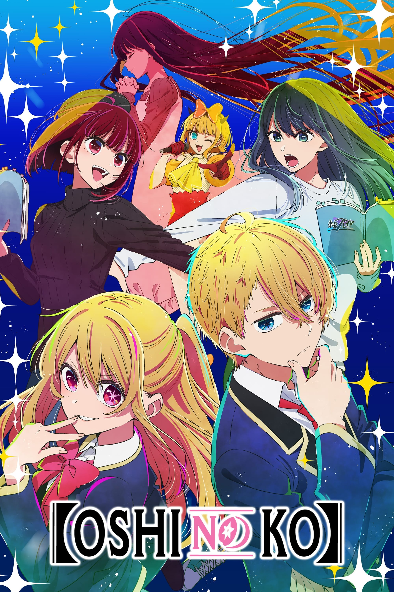
ĐỨA CON CỦA THẦN TƯỢNG
Aqua, con trai của nữ thần tượng đã qua đời là Hoshino Ai. Là một fan hâm mộ cuồng nhiệt của Ai, Aqua quyết tâm điều tra kẻ đã giết mẹ cậu. Để thực hiện mục tiêu báo thù, cậu học làm đạo diễn và từng bước thâm nhập vào ngành công nghiệp giải trí.
Chi tiết